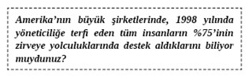
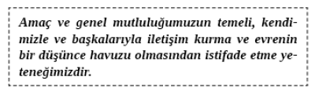

1. BÖLÜM - KONUŞARAK ZİRVEYE ÇIKIN
İLETİŞİM SÖYLEDİĞİNİZDEN ÇOK DAHA FAZLASIDIR. İletişim, ‘onu’ söyleme şeklinizdir. İletişim dinlemeye, konuşmaya dayanır ve karşılıklı olarak hislerle düşünceleri başkalarına açma eylemidir. İnsan daha iyi iletişim kurdukça, aşk ilişkilerinden iş dünyası ve satışa kadar her şeyde mükemmel hale gelir.
Peki ‘zirve’ nedir? Zirvede olmak, hayatınızın kontrolünün kendi elinizde tutmanız demektir. Zirvede olmak, istediğiniz kişi olmak ve kimle olmak istiyorsanız onunla olmak demektir. Zirvede olmak, olabileceğiniz her şey olmak demektir. Zirveye yolculuğunuzda, mükemmel bir dinleyici olmakla tanınmaya başlarsınız. Gerçekte istediğiniz herkesle nasıl mükemmel arkadaşlıklar ve ilişkiler kurulacağını da bilirsiniz. Ofis dışında tutkulu ve uzun süreli bireyler arası ilişkiler kurarken kesinlikle şirket ve kariyer merdivenlerini çıkmaya başlayacaksınız. Yaşam tecrübelerimizde zirveye ulaşmak, iletişim sırlarını anlayan ve uygulayan herkes için mümkündür.
Zirvede olmak, kendinizi anlamak ve etkin kişisel iletişime katılmak anlamına gelen mükemmel içsel iletişimi içerir. Zirvede olmak yeteneklerinizi kullandığınız anlamına gelir.
Zirvedeki insanlar daha mutlulardır ve çok para kazanırken sıklıkla daha basit ve daha tatmin edici hayatlar yaşarlar. Gerçekten başarılı insanlar enerjilerini sağlığa, zenginliğe ve mutluluğa nasıl yönelteceklerini bildikleri için böyle olur. Bu kitap iletişimle ilgilidir ve iletişim sizin zirveye giden aracınızdır.
Zamanınızı geçirmek istediğiniz insanlarla iletişim kurmak konuşarak zirveye çıkmanın bir parçasıdır. Hâlâ zamanınızı geçirmek istediğiniz insanları bulamadıysanız, bu kitap size bu önemli insanları bulmak için doğru kartları nasıl oynayacağınızı gösterecek. Eğer bu kişileri bulduysanız size onlarla nasıl gerçekten iletişim kurulacağını ve çok samimi deneyimler yaşayacağınızı öğretecek. Konuşmaya dinlemek de dâhildir. Bu kitapta daha sonra dinlemekle ilgili çok konuşacağız.
Son on yıldır, binlerce saatimi bir hipnoterapist olarak kronik hastalarla çalışarak geçirdim. Zihnin incelikleri ve insanların gerçekten ne düşündükleri hakkında dünyada herkesten çok bilgi edinme ayrıcalığına kavuştum. Hipnoterapist olarak çok zengin bazı yöneticilerden sıradan kadınlara kadar değişik insanlarla çalışma fırsatı buldum. İnsanların sağlıklarını kazanmalarına yardım ederken onların içlerinden geçenlere, korkularına, amaçlarına ve harekete geçmelerini sağlayan şeylere sırdaş oldum. Bu kitapta bu insanların hikâyelerine rastlamayacaksınız. Doğrudan, başka insanlarla korkunç ve mükemmel uzun süreli ilişkiler kuran insanlarla sırdaşlık deneyimime dayanan birçok ayrıntı bulacaksınız. İletişimin hayatınızın bütün yönlerini nasıl etkin şekilde değiştirebileceğini göreceksiniz.
Son yirmi yıldır günlük yaşamda iletişim hakkında çalıştım, araştırma yaptım ve onu anlamayı öğrendim. Uzmanlık alanım normalde sözsüz iletişim (vücut dili) olarak değerlendirilse de iş hayatındaki ve ilişki yaşayan insanlar ile insanların gelişmeleri gereken alanlarda başarı göstermelerini neyin sağladığı konusunda çalıştım ve onlarla ilgili birçok şey öğrendim. Pelican Publishing Co. The Psychology of Persuasion adlı üçüncü kitabımı 1996’da yayınladı. The Psychology of Persuasion size etkileme sürecini adım adım gösterir. Bu kitap insanlara ikna edici birebir iletişim konusunda yardım etmeyi amaçlıyordu. İnsan davranışlarını etkilemek, hayatta her açıdan başarıyı yakalamak için çok önemli.
Konuşarak İkna Psikolojisi adlı bu kitabı yazmadaki amacım ise uzun süreli ve sürekli değişim sağlamak için hepimizin kullandığı en önemli araç olan iletişimle hayatınızı nasıl tamamen değiştireceğinizi paylaşmak. Sizin için hedefim enerjinizi hayatınızda başarılı olmak istediğiniz alanlara yönlendirmeniz. İster kendiniz hakkında daha iyi hissetmek, ister iş hayatında başarılı biri gibi konuşmak ya da uzun süreli ilişkiler kurmak isteyin, bu kitap tam size göre. Burada size işte, ilişkilerde ve kendinizle iletişimin kontrolünü nasıl ele geçireceğiniz gösteriliyor. İş hayatında bir süredir bulunuyorsanız, lobi yapmanın uzun süreli başarı için kesinlikle gerekli olduğunu biliyorsunuzdur.

Şirketinizde tavsiyesini dinleyeceğiniz kişisel bir danışman var mı?
Başarılı, samimi ilişkiler birbirleriyle iyi iletişim kuran insanları içerir. İnsanların iyi ilişkileri sürdürmelerinin bir numaralı nedeni konuşup birbirlerini dinleyebilmeleridir. Kendinizle içsel iletişimde iyi olmak, kişisel hâkimiyet ve başarının son aşamasıdır. Benliğinizle iletişim halinde olabilme fikri büyük hayranlık uyandıran bir durumdur. Başarılı filozof Napoleon Hill’den multimilyoner W. Clement Stone’a, iş ve spor dünyası liderlerine kadar hepsinin mükemmel içsel iletişimleri vardır. Başka deyişle bu insanlar içlerinden gelen sezgisel sesi başarılı bir şekilde dinlemeyi bilmişlerdir. Bu insanlar istediklerini almak üzere zihinlerini yeniden programlamak için tam olarak ne gerektiğini bulmuşlardır.
Tony Robbins, Amerikan şirketlerine mükemmel iletişim becerileri geliştirmeyi öğreterek ve bu konuda danışmanlık yaparak yılda 100 milyon dolardan fazla kazanmaktadır. Bu kitapta Tony’yi zirveye taşıyan ve sizi de oraya taşıyacak sırları bulacaksınız. Kendilerini inanılmaz bir şekilde kontrol eden insanlar her durumda kendileriyle iletişim halindedir. Hazır başlangıçtayken bu kitap boyunca yol gösterici olacak birkaç ana fikre bakalım. Yol göstericiler, otoyolda ne kadar yol katettiğimizi gösteren işaretler gibidir ve hayatta neyin önemli olduğunu hatırlamamıza yardım eder.
Napoleon Hill; Andrew Carnegie, Thomas Edison, Henry Ford ve zamanın önemli diğer liderlerini özel kılan temel prensipleri belirlemek için sorular sorduğunda başarının on yedi anahtarını buldu. Bunlardan biri ‘sonsuz zekâyla’ iletişim kurma yetisiydi. Ünlü psikolog Carl Jung ve birçok bilim adamı gibi dünyadaki gerçekten mükemmel liderlerin ‘kendilerinden daha öte’ bir şeyle uyum içerisinde oldukları görülmektedir. Gerçekten de geçmişte böyleydiler ve bu gün de böyleler. Bu kitapta bu konuya değineceğiz.
Düşünceler Evreni Sizinle Konuştuğunda Dinliyor musunuz?
Mükemmel erkekler ve kadınların hepsi dinleyicidir. Bill Clinton esnektir çünkü duygudaşlık kurmasıyla öne çıkan bir dinleyicidir. Görüşlerinin değerleri ve kişisel kararlarıyla uyumuna bakmaksızın birçok insan onun kalbinde Amerika Birleşik Devletleri’nin iyiliği olduğuna inanırlar. Peki, bu inanç nasıl böyle yayıldı? Clinton her zaman dinledi. O her bireyin ülkenin daha iyi olmasıyla ilgili söylediklerini duymak istedi. Gerçekten dinleme becerisi önemlidir ve özellikle empati kurarak başka insanların nasıl etkin dinleneceğini derinlemesine işleyeceğiz.
Dinlemek, dikkatli bir şekilde diğer insanın susmasını beklemekten daha ötedir. Dinlemek, başkalarının kalplerini ve zihinlerinin derinliklerilerini anlamak, değişik hayat tecrübelerini onların bakış açılarından yaşamaktır. Peki bunu bir adım daha ileriye götürerek nasıl gerçekten mükemmel insanlar gibi olabiliriz? Paul McCartney’nin gece uykusundan mükemmel şarkılarını oluşturacak melodiler ve sözler için uyandığını muhtemelen bilirsiniz. McCartney ne dinliyordu? ‘Sonsuz zekâ’ ile nasıl iletişim kuruyordu?
Telefonun aynı anda birden fazla kişi tarafından icat edilmekte olduğu gerçeği sizi çok şaşırttı mı? Hatta acaba bunun farkında mıydınız? Otomobil, radyo, elektrik, ampul, televizyon ve uçağın eş zamanlı olarak (her biri kendi döneminde) farklı bireyler tarafından icat edilmekte olduğunu biliyor muydunuz? Bütün bu dünyayı değiştiren icatlara dair fikirler aynı anda birden fazla insanın aklındaydı. Zihinselliğin ötesinde bunların hepsi aynı anda icat edilmekteydi. Çoğu durumda fikirler, başka insanların o alanda yaptığı çalışmaları sayesinde ortaya çıktı. Bu durumu sanayinin gelişmesiyle açıklamak kolay olurdu ama bu icatlar daha sonraki icatlar açısından mantıklı veya gerekli değillerdir. İlk uçak, Kitty Hawk’ta Wright Kardeşler tarafından test edildiği dönemde neredeyse kimsenin otomobili yoktu. Aslında otomobil, ilk uçuşun gerçekleştirilmesinden yalnızca birkaç yıl önce icat edilmişti.
Bütün bunlar, eğer biz dinlersek evrenin zihinlerimizi harekete geçirmek için hazır olduğu anlamına gelebilir. Bu, evrenin bu fikirleri birleşik alana kazıdığı ve eğer evreni yeteri kadar kurcalarsak hayatımızı değiştirecek bazı düşünceler ve fikirler edinebileceğimiz anlamına da gelebilir. Hayattaki amaçlarını ve misyonlarını keşfedenlerin bir tür birleşik alandaki fikirlere ulaşabildiği görülmektedir. Bazı insanlar bu fikirleri ‘dinlerler’ ve gezegenimizin yaşam kalitesini değiştirirler. Tarihe bakıldığında Edison, Wright Kardeşler, Bell, Ford ve onlar gibi insanlar aşırı dindar değildiler ama düşünceler ve olasılıklar havuzu olarak ifade edilebilecek bir şeyle ‘iletişim içinde’ gibiydiler. Ben sizin bu düşünce kaynağıyla iletişim içinde olabileceğinize inanıyorum. Kitabın sonunda bu kaynağı dinleyebilmenizin en muhtemel yöntemini sizinle paylaşacağım.
Mükemmel İletişim Kuran İnsanlar Bilerek Yaşarlar. Ya Siz?
Yalnızca biyolojik bir hayvan olmaktan çok daha fazlası olabilme olasılığına açık mısınız? Ruhsal bir yanınız olması veya var olan parçanızın fiziksel bir deneyimden geçmesi mümkün mü? Bu fiziksel deneyim yolculuklarınızı ve başarılarınızı kanıtlayan, bir dayanak olması gereken bir deneyim mi? Eğer bir neden ve özel bir amaçtan dolayı var olmuşsanız bu neden veya amaç nedir? Hayatlarını olumlu bir tavır ve amaçla yaşayanlar gerçekten zirveye ulaşanlardır.
Tabii ki birçok insan amaçlarını ve varoluş nedenlerini asla bulamazlar. Varoluş amacınızın bir parçası da tabii ki mutluluk ve neşeyi tatmaktır. Bu deneyimler çoğunlukla biz başka insanlarla iletişim halindeyken yaşanır. Bazen de ruh halimizin gayet huzurlu olduğu yalnız olduğumuzda bir anda gerçekleşir.
Bu deneyimi yaşamak çok tatsız bir iş veya mükemmel bir armağan olabilir. Sizin tam anlamıyla hayallerinizi yaşama ve hayatınızı başkaları için bir armağan haline getirme yetiniz olabilir! Zevki tatma yetiniz vardır. Birilerinin elini tutmak, onlara sarılmak, seslerini duymak ve gülüşlerini görmek ne kadar da mükemmel bir şeydir. Bir elmalı tartın ya da plajda yürürken gelen okyanusun kokusu... Bunların hepsi gözden kaçırdığımız ve çıkardığımız mükemmel deneyimlerdir. Herhangi duyusu engelli olan biriyle zaman geçirin ve işte o zaman duyularınızın değerini bilirsiniz.
‘Yaşamak’, öğrenmek ve tecrübe etmek için olağanüstü bir fırsattır. Dalai Lama birden çok kez mutluluğu aramanın hayatta en büyük amaçlardan biri olduğundan bahsetmiştir. Haklı değil mi? İkinci Dünya Savaşı’ndaki toplama kamplarını ilk elden yaşayan Viktor Frankl, insanların kişisel yaşam koşulları ne olursa olsun hayattaki amacını ve hayatın anlamını keşfetmenin önemini vurgulamıştır. Man’s Search for Meaning adlı kitabın yazarı olan Frankl; toplama kamplarındaki günlük hayata, göze çarpan bir cesaret ve umut hissiyle katlanmıştır. Kişisel tavrı hayatta kalmasında büyük rol oynamıştır. Frankl’in içsel iletişiminin ne kadar iyi olduğunu düşünürsünüz?

Bu kitapta, öncelikle iletişim konularının en basitini ele almayı hedefleyeceğiz. Sizin de keşfedeceğiniz üzere sırlar, teknikler ve stratejiler olarak alt dallara ayrılan üç temel iletişim katmanı vardır. Ancak tek hatırlamanız gereken şu üçüdür: Başkaları, kendimiz ve sonradan ‘birleşik alan’ olarak ifade edilecek düşünceler havuzu.
Sevdiğimiz ve sevmediğimiz insanlarla iletişimi içeren kişiler arası iletişimle başlayacağız. İletişimin temelleri konusunda ustalaşınca günlük iletişim halinde olmak istediğimiz (patronumuz, çalışanlarımız, arkadaşlarımız, eşlerimiz, çocuklarımız vb.) özel insanlarla ve yakın olmak istediklerimizle nasıl iletişim kurulacağından bahsedeceğiz. Sonra da kendimizle nasıl konuşup dinleyeceğimizi inceleyeceğiz. Kendi varoluşumuzun yegâne amacını nasıl keşfedeceğimizi öğreneceğiz ve bunun başarılı bir hayatın zirvesine ulaşmak için ne kadar önemli olduğunu irdeleyeceğiz.
Son olarak da Paul McCartney, Henry Ford ve dünyayı değiştiren bütün mükemmel insanlar gibi fiziksel deneyimin düşünce ve fikir deneyiminin ötesine geçmesini sağlayan nihai iletişim içinde birleşik alanın kaynaklarından faydalanmanın sırlarını öğreneceğiz. Bu ‘dinleme’ süreci yalnızca isteyenleri ve başaranları ayıran altın anahtarlardan biridir.
Bu kitap sizi mükemmel başarılara götürecek ve başarıları daha da tatmin edici kılan başarısızlıkları atlatmanızı sağlayacak. Şimdi yaşam mükemmeliyeti el kitabına sahip olmaktan gerçekten çok az farkı olan iletişim mükemmeliyeti el kitabına sahipsiniz. İletişim mükemmeliyeti yaşam mükemmeliyetine yol açar. Zirveye yolculuğunuzda destek olacak özel iletişim tekniklerini ve düşünme stratejilerini öğreneceksiniz.